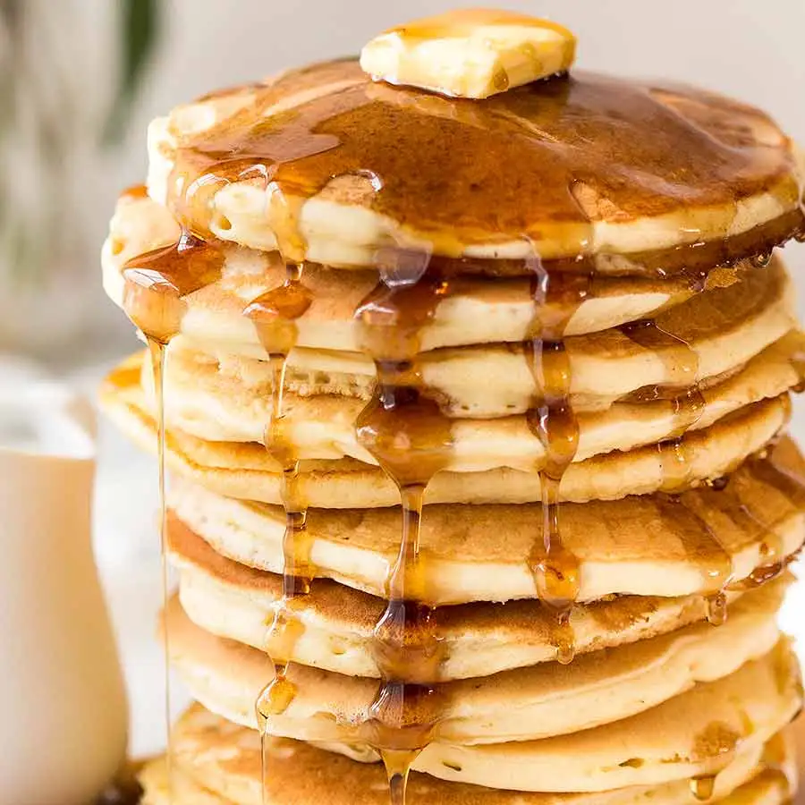

Pancake Recipe

Description
To make the perfect fluffy pancakes you will need the
following ingredients:
Ingredients
- Flour
- Milk
- Eggs
- Sugar
- Baking Powder
- Salt
- Butter/Cooking oil
Steps
- First step is to place your flour, salt, sugar and
baking powder into a mixing bowl.
Make a small crater in the middle.
- Crack an egg or two into the crater you made
previously. Gently mix the egg into the mixture.
- Pour your milk into the mixture and wisk till smooth.
- Heat up a pan on the stove and place either a small
bit of butter or oil onto the pan.
- Use a ladle to scoop pancake mixture into the pan and
cook till golden on both sides.